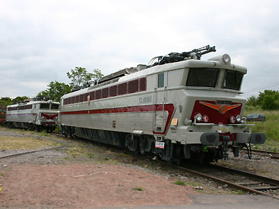

Locomotives polycourantes et polyfréquence
Avec le développement de l'Europe communautaire, le besoin se faisait de plus en plus sentir de relier les capitales Européennes par des relations ferrées haut de gamme. Les premiers TEE sont confiés à des automoteurs légers et luxueux qui s'affranchissent des différents systèmes d'électrification de chaque pays. Mais grâce aux progrès de l'électromécanique et face à la montée en charge de ces relations, il est envisagé dès les années 50 de concevoir des locomotives polycourantes taillées pour le trafic international.
Les essais Français, bien que techniquement encourageants, eurent des applications très limitées. Alors que les convois voyageurs passe-frontière font appel à des automotrices polycourantes ou des relais traction, l'ouverture du Fret Européen nécessite en revanche une nouvelle génération de machines polycourantes à électronique de puissance.

Les CC 40101 et 40109 aux portes ouvertes de Lens (11/06/2005)